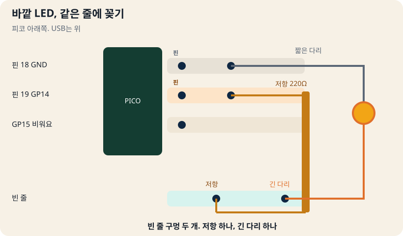

3차시
반딧불이
바깥 LED를 저항과 함께 연결하고, 짧게 몇 번 깜박인 뒤 쉬는 패턴을 만듭니다.
- 불이 켜지는 이유
- 연결
- 1초마다 깜박이기
- 반딧불이 패턴
01
원리
원리출력 핀이 켜지면 약 3.3V, 꺼지면 0V입니다. LED는 긴 다리에서 짧은 다리로 전기가 흐를 때만 빛이 납니다. 저항은 전류를 줄여 LED가 타지 않게 합니다.
02
연결
USB를 뽑고 연결한 뒤 다시 꽂습니다. 이어야 하는 다리는 브레드보드의 같은 줄에 둡니다.

| 부품 | 연결 |
|---|---|
| 저항 한쪽 | GP14, 보드 핀 19와 같은 줄 |
| 저항 다른 쪽과 LED 긴 다리 | 서로 같은 줄 |
| LED 짧은 다리 | GND, 보드 핀 18 |
방향. 긴 다리가 GND 쪽이면 불이 안 켜집니다. 저항 없이 LED를 전원에 바로 잇지 않습니다.
03
1초 깜박
blink.py
from machine import Pin
import time
led = Pin(14, Pin.OUT)
while True:
led.on()
time.sleep(1)
led.off()
time.sleep(1)
1을 0.2로 바꾸면 더 빨리 깜박입니다. 숫자를 바꾼 뒤에는 정지하고 다시 실행합니다.
04
반딧불이
짧게 세 번 켜고 1.2초 쉽니다. for가 세 번, 그 뒤 sleep이 쉼입니다.
firefly.py
from machine import Pin
import time
led = Pin(14, Pin.OUT)
while True:
for i in range(3):
led.on()
time.sleep(0.12)
led.off()
time.sleep(0.12)
time.sleep(1.2)
range(3)을range(5)로 바꾸면 한 묶음에 다섯 번입니다.- 코드는 도는데 바깥 LED만 꺼져 있으면 다리 방향, 같은 줄, 숫자 14를 봅니다.